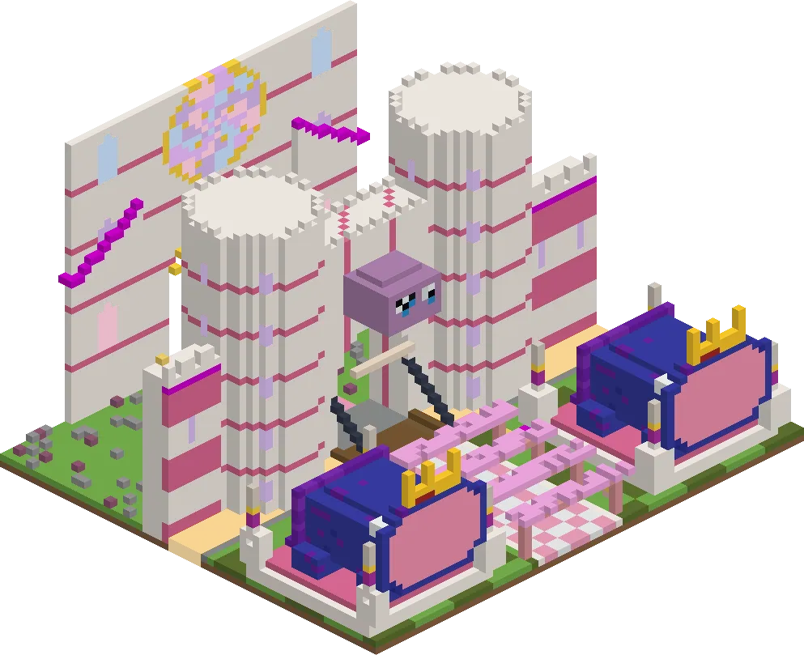
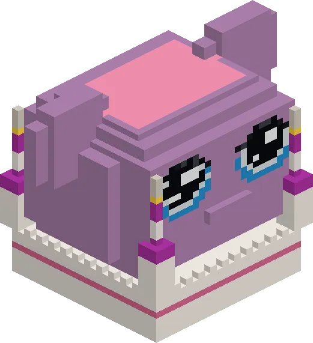
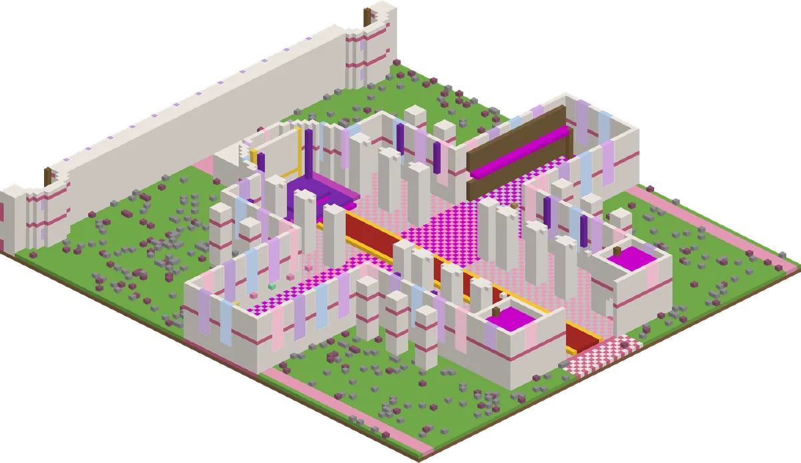
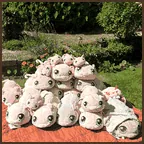

Legendarisch: de Koningguh, de poortwachters en een schatkamer (heel ver!)
The guh castleHet guhkasteel
The biggest thing in the mod: a legendary rare guh castle of 256×256 in the Guhmension, gothic with a guh twist. A moat of kaas saus with a drawbridge and a twin-tower gatehouse, buttressed walls with round towers and spires, and in the middle the guhdraal: a cathedral-castle with a tall nave (the throne room, with pointed arches and aisles), transepts with the feast hall and the library, flying buttresses with pinnacles, a rose window between two spired towers, and a crossing tower with a giant guh head on top (up to 130 blocks high). South of it the royal garden in pink and green: a pergola avenue of guh blossom with two big Koningguh statues, a fountain plaza with a golden guh, parterres of flowers and hedges, a hedge maze, a pond with guh fish and more fountains. A dungeon with Mikas: take the stairs down in the chapel of the east aisle of the guhdraal (or in the kitchen). The Guhmension super compass (Wonders > Guh castle) shows the way; it can be thousands of blocks away.
Het grootste van de hele mod: een legendarisch zeldzaam guhkasteel van 256×256 in de Guhmensie, gotisch met een guhtwist. Een slotgracht van kaassaus met een ophaalbrug en een poortgebouw met twee torens, muren met steunberen, ronde torens en spitsen, en in het midden de guhdraal: een kathedraal-kasteel met een hoog schip (de troonzaal, met spitsbogen en zijbeuken), dwarsschepen met de feestzaal en de bibliotheek, luchtbogen met pinakels, een roosvenster tussen twee torens met spitsen, en een kruisingstoren met een reuzen-guhhoofd erop (tot 130 blokken hoog). Ten zuiden de koninklijke tuin in roze en groen: een pergolalaan van guhbloesem met twee grote Koningguh-standbeelden, een fonteinplein met een gouden guh, perken met bloemen en hagen, een heggendoolhof, een vijver met guhvissen en meer fonteinen. Een kerker met Mika's: neem de trap naar beneden in de kapel in de oostbeuk van de guhdraal (of in de keuken). Het Guhmensie-superkompas (Wonderen > Guhkasteel) wijst de weg; het kan duizenden blokken ver zijn.

The gateDe poort
The gatehouse, the drawbridge over the moat and the two Koningguh statues.Het poortgebouw, de ophaalbrug over de gracht en de twee Koningguh-standbeelden.

The guh headHet guhhoofd
On top of the crossing tower, facing the garden.Boven op de kruisingstoren, met zijn gezicht naar de tuin.

InsideBinnen
The nave with the throne in front of the apse, the feast hall and the library in the transepts.Het schip met de troon voor de apsis, de feestzaal en de bibliotheek in de dwarsschepen.

Guh paintings: the Guh PileGuhschilderijen: De Guhstapel
Guh paintings hang just like normal paintings. The first one is De Guhstapel: a pile of guh plushies in the garden, 9×9 blocks, pixelated like a real Minecraft painting. The big one hangs behind the Koningguh's throne; you can take one from the creative tab Guhs, and a normal painting can come out as the guh pile too if there's room for 9×9.
Guhschilderijen hang je op zoals gewone schilderijen. De eerste is De Guhstapel: een stapel guhknuffels in de tuin, 9×9 blokken, pixelig zoals een echt Minecraft-schilderij. De grote hangt achter de troon van de Koningguh; je pakt er een uit het creatieve tabblad Guhs, en een gewoon schilderij kan ook de guhstapel worden als er plek is voor 9×9.
LootBuit
| ItemVoorwerp | CountAantal | ChanceKans |
|---|---|---|
| 1 | oftenvaak | |
| 2–24 | oftenvaak | |
| 1–3 | oftenvaak | |
| 1 | oftenvaak | |
| 1 | oftenvaak | |
| 8–16 | oftenvaak | |
| 2–6 | oftenvaak | |
| 2–5 | sometimessoms | |
| Goudblok | 1–3 | sometimessoms |
| 1 | sometimessoms | |
| 1–3 | 30% | |
| 1 | oftenvaak | |
| 1 | oftenvaak | |
| 1 | oftenvaak |